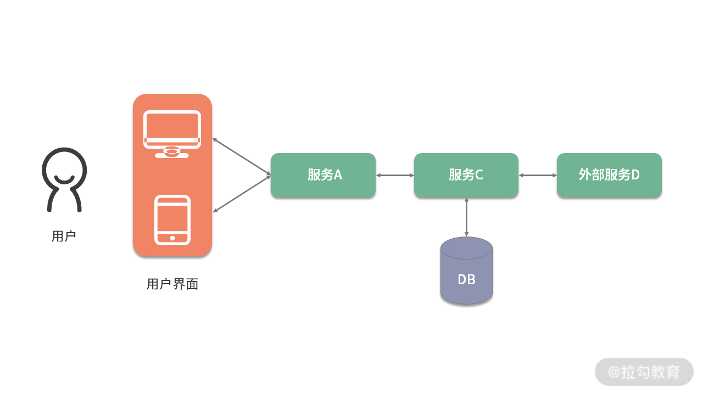
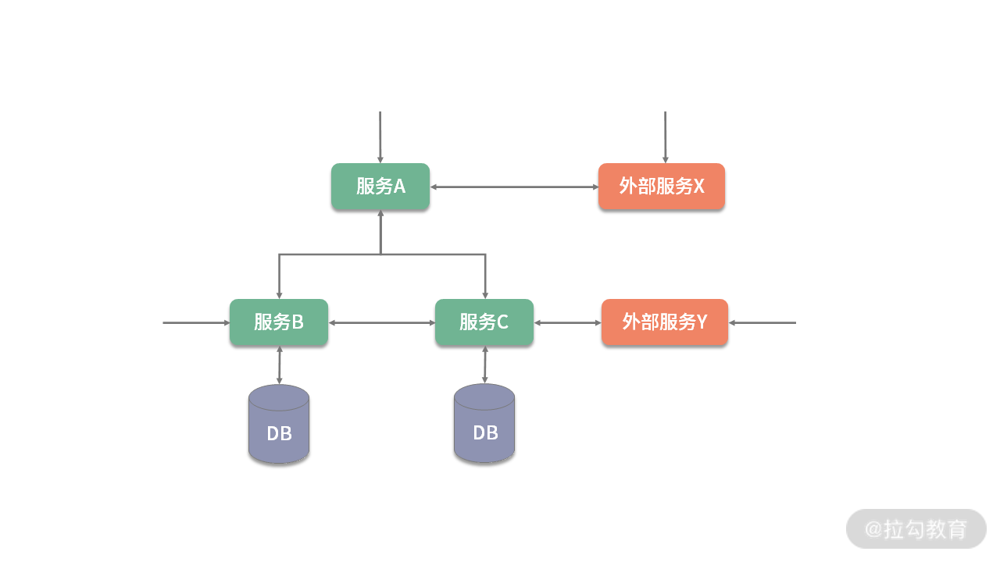

- 00 开篇词 既往不恋，当下不杂，未来不迎.md.html
- 01 微服务架构有哪些特点？.md.html
- 02 微服务架构下的质量挑战.md.html
- 03 微服务架构下的测试策略.md.html
- 04 单元测试：怎样提升最小可测试单元的质量？.md.html
- 05 集成测试：如何进行微服务的集成测试？.md.html
- 06 组件测试：如何保证单服务的质量？.md.html
- 07 契约测试：如何进行消费者驱动的契约测试？.md.html
- 08 端到端测试：站在用户视角验证整个系统.md.html
- 09 微服务架构下的质量保障体系全景概览.md.html
- 10 流程规范篇：高速迭代的研发过程需要怎样的规范？.md.html
- 11 测试技术篇：测试技术这么多，我该如何选型？.md.html
- 12 测试技术篇：如何提升测试效率？.md.html
- 13 测试技术篇：专项测试技术解决了哪些专项问题？.md.html
- 14 CICD 篇：如何更好地利用多个“测试”环境？.md.html
- 15 CICD 篇：如何构建持续交付工具链？.md.html
- 16 度量与运营篇：如何做好质量和效率的度量与运营？.md.html
- 17 度量与运营篇：如何度量与运营效率和价值？.md.html
- 18 组织保障篇：质量是设计出来的.md.html
- 19 软件测试新趋势探讨.md.html
- 20 结束语 QA 如何打造自身的核心竞争力？.md.html
08 端到端测试：站在用户视角验证整个系统
前几课时，我先后讲到了微服务架构下的单元测试、集成测试、组件测试和契约测试。今天我来讲解下分层测试策略的最顶层——端到端测试。
端到端测试详解
定义
端到端测试（End-to-end Test）是一种用于测试整个应用程序的流程是否符合预期的测试技术。 它模拟用户真实的使用场景，通过用户界面测试应用程序，如图所示：

与其他类型的测试相反，端到端测试是面向业务的，其目的是验证应用程序系统整体上是否符合业务目标。为了实现这一目标，该系统通常被视为黑盒子：尽可能完整地部署系统中的微服务，并主要通过 GUI 和 API 等公共接口对其进行操作。
GUI：Graphical User Interface，又称图形用户界面或图形用户接口。它是采用图形方式显示的计算机操作用户界面，是一种人与计算机通信的界面显示格式，允许用户使用鼠标等输入设备操纵屏幕上的图标或菜单选项，以选择命令、调用文件、启动程序或执行其他一些日常任务。
API：Application Programming Interface，又称呼应用程序编程接口或应用程序接口。它是一组定义、程序及协议的集合，通过 API接口实现计算机软件之间的相互通信。API 的一个主要功能是提供通用功能集，同时也是一种中间件，为各种不同平台提供数据共享。
由于微服务架构包含多个具有相同行为的活动部件，因此端到端测试为服务之间传递消息的正确性提供了更多的信心，而且还可以确保正确配置了其他网络基础结构，例如防火墙、代理或负载均衡等。
测试范围
通过微服务的分层测试策略可知，端到端测试的范围比其他类型的测试大得多。

分层测试策略-测试范围
绝大多数情况下，微服务应用系统会依赖一个或多个由外部管理的微服务。通常，这些外部服务包含在端到端测试范围内。 但是，在极少数情况下，也可以主动排除它们。因为如果外部服务由第三方管理，可能会经常出现稳定性和可靠性问题，这会导致端到端测试因不可控的原因而失败。

微服务应用的典型示例
比如，某个应用程序系统依赖公安部门的背景审查服务，通过调用该服务来查询用户是否有过违法前科。首先这样的服务通常会按调用次数付费（每次 5-10 元），具有较高的测试成本，其次背景审查服务不总是稳定可用的。在这种情况下，通过服务虚拟化技术模拟背景审查服务是个不错的选择，这虽然多少会降低端到端测试的信心，但增加了测试用例套件的稳定性。
测试入口
因为端到端测试是面向业务的，那么测试时要从真实用户的使用场景来进行测试，根据应用程序系统是否有 GUI，可以分为两种情况：
- 应用程序系统有 GUI，这种情况下用户可以直接操作 GUI 来使用系统，那么诸如 Selenium WebDriver 之类的工具可以帮助驱动 GUI 触发系统内的特定行为。
- 应用程序系统没有 GUI，这种情况下，使用 HTTP 客户端通过其公共的 API 直接操作微服务。没有真实的 GUI，不能直观地看到业务功能行为，但可以通过后台数据来确定系统的正确性，比如 API 的返回结果、持久化数据的变化情况，等等。
测试设计
确定测试范围和测试入口后，可以进一步梳理出要测试的功能列表或用例集，并对其按业务能力、优先级、重要性等维度进行分组。这样可以将它们拆分为较小的任务，以便整个团队可以排序处理，比如可以首先实施优先级较高的用例组，或按紧急程度处理关键的用例，这有助于我们尽早消除潜在的障碍。
另外，由于端到端测试的目标是完全集成后的系统的行为，使得编写和维护测试用例会比其他类型的测试更加困难：
- 端到端测试涉及的活动部件比其他测试多得多；
- 端到端测试须考虑系统中的异步处理。
这些因素都可能给端到端测试带来挑战，比如测试过程不稳定、测试时间过长、测试用例集的维护成本高，等等。因此，应尽可能以最粗粒度进行端到端的测试设计。
如何开展端到端测试？
熟悉了端到端测试的基本内容，我们来看下如何开展端到端测试，主要有如下几类：
- UI 自动化
对于带有 GUI 的应用程序系统，在进行端到端测试时，可以通过 UI 自动化的方式进行。如果 GUI 是 Web 形式，则 Selenium 是首选工具；如果 GUI 是 Native 形式，则可以使用 Appium。
使用 UI 自动化方式进行端到端测试时，UI 本身也存在不稳定性，因此在测试应用程序时避免使用 GUI 也许是个不错的主意。
- API 自动化
REST-assured 库可以绕开 GUI 来测试 REST API 的服务，它用于针对API 触发实际的 HTTP 请求并评估收到的响应是否符合业务需要。
- 手工测试
手工测试则是像真实用户那样通过用户界面使用应用程序系统，而且测试自动化工作从来都不可能是完美的。比如，几乎不可能通过编写自动化用例来检测特定的错误，有时会在自动化测试中错过某些边缘情况，某些质量问题在自动化测试中并不明显，不容易被发现，等等。因此，进行某种形式的手工测试依然是一个好主意，且当进行手工测试时，可以适当地引入探索式测试。
探索式软件测试是一种手动测试方法，强调测试人员在运行系统中发现质量问题的自由度和创造力。只需使用破坏性的思维方式，并提出在应用程序中引发问题和错误的方法。记录所有找到的内容，以备日后使用。当心错误、设计问题、响应时间慢、丢包或错包、以及所有其他会困扰软件用户的问题。
端到端测试实践心得
通过上述内容可知端到端测试的重要性、实用性、复杂性，这里跟你聊一下我对端到端测试的几点实践心得。
- 编写尽可能少的端到端测试，但绝不能省略它
由于可以通过较低级别的测试技术来获得微服务的质量信心，因此端到端测试的作用是确保一切都紧密联系在一起，从而实现业务目标。在端到端这个级别的测试上，全面地测试业务需求无疑是浪费的，尤其当微服务数量较多时，它的投入产出比必然很低。所以需要所有其他测试手段都用尽后，再进行端到端测试，并以此作为最终的质量保证。
同时需要警惕的是，端到端测试要尽可能地少，但绝不能省略它。因为微服务架构下的分层测试，每一层都有独特的作用，不可轻易省略某一层级的测试。对于端到端测试来说，无论如何也需要验证业务的核心链路和功能。微服务测试人员经常会犯的错误是，在充分进行了较低层次的测试后，会乐观地认为已不存在质量问题，结果问题被生产环境的真实用户发现后才追悔莫及。
- 分析缺陷产生的层次，推进分层测试的落地与完善
在微服务测试过程中，要善于对出现过的缺陷进行合理性分析。比如，如果较高级别的测试发现缺陷，并且没有进行较低级别的测试或较低级别的测试未执行失败，则需要推动落地或完善较低级别的测试。只有尽可能将测试推到测试金字塔的下方，才能逐渐将分层测试策略在项目中落地。
- 测试设计时应专注于真实的用户操作
为了确保端到端测试用例套件中的所有测试都是有价值的，可以围绕系统用户的角色以及这些用户在系统中进行的操作轨迹进行分析和场景设计。
例如，对于用户在网站上购物这个场景来说，应编写的是一个包含浏览商品、放入购物车、付款这三个操作的单个测试，而不是分别单独测试每一个操作。这种方法可以显著减少编写的测试数量并缩短测试执行时间。
- 慎重选择测试入口
如果特定的外部服务或 GUI 是测试用例套件中不稳定的主要原因，则可以重新确定测试范围以便排除掉不稳定的组件。但这里需要注意的是，虽然推荐使用服务虚拟化来模拟不稳定的服务，但尽量用真实的外部服务或 GUI 对核心链路进行至少一次的端到端测试，而不是一直使用服务虚拟化工具来模拟。
- 使测试与数据无关
端到端测试的常见困难来源是数据管理，有必要针对测试数据进行管理：如果数据可以用业务操作进行构造，则在端到端执行之前构造好需要的测试数据；如果不允许以业务操作方式构造，则可以在数据库中插入所需数据。
- 端到端测试，从来都不 low
一些测试人员认为端到端测试没有技术含量，我不太认同。因为测试过程中的关注点和验证点不同，个人的收获也不尽相同。你当然可以把端到端测试看成是一个纯黑盒测试，测试的过程就是不断“点点点”的过程，发现问题时直接反馈给研发同学，等研发同学排查解决后回归验证。你也可以提前梳理好核心链路服务调用关系、数据库表结构、核心类的代码逻辑等内容，在进行端到端测试时，针对关键操作实时查看接口调用情况、服务操作的日志、数据库等信息。并且当出现问题时，或许你自己就能定位出问题所在，即使未能定位出来，也可以把你排查到的中间结果告知给研发同学，使研发同学可以更快定位到问题所在。这种端到端测试属于灰盒测试（黑盒测试+白盒测试），测试效率变高、范围更加精准，研发人员对待你的态度也将大不一样。
总结
本节课，我讲解了微服务架构下的端到端测试，它是一种用于测试整个应用程序的流程是否符合预期的测试技术。它的测试范围比其他类型的测试大得多。绝大多数情况下，微服务应用系统依赖的外部服务也应包含在端到端测试范围内。如果有必要，也可以主动排除它们。端到端测试是面向业务的，所以测试时要从真实用户使用场景来进行测试，尽可能完整地部署系统中的微服务，并主要通过 GUI 和 API 等公共接口对其进行操作。
紧接着我又讲解了如何开展端到端测试，主要通过 UI 自动化测试方式、API 自动化测试方式和手工测试方式来进行：通过端到端测试框架（如Selenium、Appium、 REST-assured ）和探索式软件测试方法发现整个应用程序的缺陷。
最后我给出了我在端到端测试方面的一些实践心得，包括端到端测试数量、缺陷分析和分层测试推进、测试设计时的关注点、对测试入口的选择、测试数据的准备和对端到端测试的基本认识等。
到目前为止，关于微服务的分层测试策略的内容就介绍完了，再来整体回顾一下。

- 单元测试（Unit Test） ：从服务中最小可测试单元视角验证代码行为符合预期，以便测试出方法、类级别的缺陷。
- 集成测试（Integration Test）：验证当前服务与外部模块之间的通信方式或者交互符合预期，以便测试出接口缺陷。
- 组件测试 （Component Test）：将测试范围限制在被测系统的一部分（一般是单个服务），使用测试替身（test doubles）将其与其他组件隔离，以便测试出被测代码的缺陷。
- 契约测试（Contracts Test）：验证当前服务与外部服务之间的交互，以表明它符合消费者服务所期望的契约。
- 端到端测试（End-to-end Test）：从用户视角验证整个系统的功能能否符合用户的预期。
你所负责的项目或服务，是否进行过端到端测试？我想，一定有。那么它具体的进展是怎样的？欢迎在留言区评论。同时欢迎你能把这篇文章分享给你的同学、朋友和同事，大家一起交流。
相关链接 https://www.martinfowler.com/articles/microservice-testing/ https://www.martinfowler.com/articles/practical-test-pyramid.html https://engineering.zalando.com/posts/2019/02/end-to-end-microservices.html https://opensource.com/article/18/6/five-microservice-testing-strategies-startups https://www.intevity.com/insights/automated-testing-with-microservices 端到端测试框架 Cypress： https://github.com/cypress-io/cypress Zalenium： https://github.com/zalando/zalenium Chakram： https://www.npmjs.com/package/chakram REST-assured： https://github.com/rest-assured/rest-assured Selenium： https://www.selenium.dev/ Appium： http://appium.io/